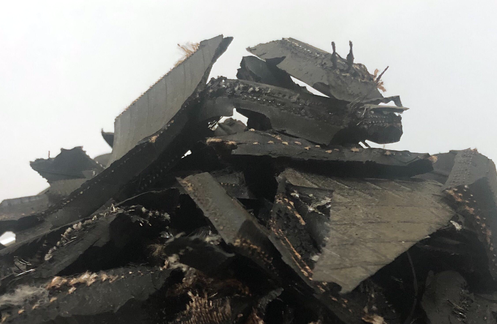
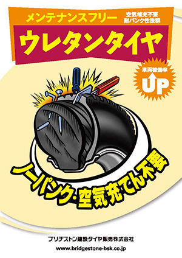

産業廃棄物処理業
当社は、収集運搬業務と中間処理業務を行っております。
処理工程フロー
1. 収集運搬業務
|
当社の収集運搬部門は、九州地区（宮崎・大分・福岡・鹿児島・熊本・佐賀）や山口県といった収集運搬エリアを定期訪問しており、お客様のニーズに合った廃タイヤ・特殊合成ゴム製品の回収業務を行っております。 |
 |
|---|
収集運搬可能品目
| 廃油 | 廃プラスチック類 | 紙くず | 木くず |
| ゴムくず | 金属くず | ガラスくず、コンクリートくず及び陶磁器くず | |
収集運搬車両一覧
| 2t車 | 1台 | 4t車 | 5台 | 11t車 | 2台 | 軽トラック | 1台 |
|---|
2. 中間処理業務
|
当社の中間処理部門は、適正処理をモットーに廃タイヤの安定的な処理を行っております。
|
 |
|---|
3. ウレタンタイヤ加工業務
|
リサイクル工場や被災地等のパンクの多い現場で利用されるショベルやクレーン等の大型車輌のタイヤ (OR・ID・AG) にウレタン樹脂を注入する事業を行っております。
|
 |
|---|